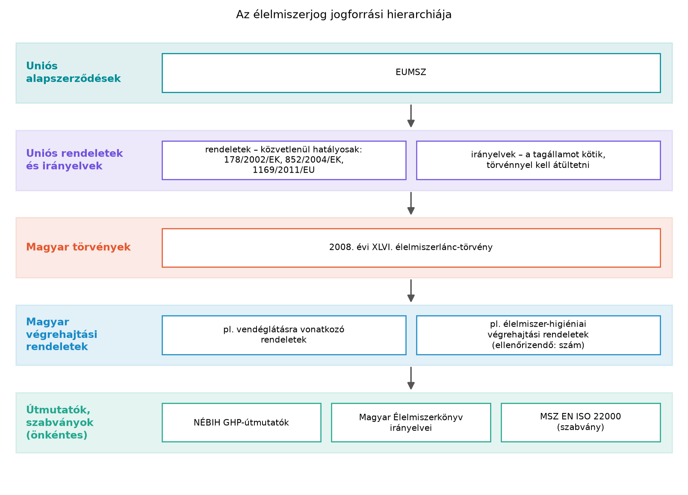

Reggel van a cukrászüzemben. A pult mögött a hűtő hőmérsékletét éppen beírják a naplóba, a konyhában a tojásos krémhez a nyersanyagokat ellenőrzik. Ekkor megérkezik a hatósági ellenőr. A vállalkozónak nem elég csak jól dolgoznia: tudnia kell, milyen szabályok szerint ellenőrzik, és hogyan tudja bizonyítani a megfelelést. Ha új terméket visz a piacra, allergénjelölést kell készítenie. Ha egy beszállító lisztje gyanús, tudnia kell, ki felel a nyomon követhetőségért. A jogszabályok nem öncélúak: a vendég egészségét védik, és tisztességes piaci versenyt teremtenek. Ebben az alfejezetben felépítjük azt a jogszabálytérképet, amelyre a későbbi GHP-, HACCP-, jelölési és vállalkozási fejezetek is támaszkodnak.
A joganyag nem egymás melletti szabályok halmaza, hanem többszintű rendszer. Fent vannak az uniós alapszerződések, alattuk a közvetlenül hatályos uniós rendeletek, majd a magyar törvények, a végrehajtási rendeletek, végül az önkéntes útmutatók és szabványok. A cukrásznak leggyakrabban az uniós élelmiszer-higiéniai rendeletekkel, a magyar élelmiszerlánc-törvénnyel és a NÉBIH útmutatóival van dolga.
Az alábbi ábra a jogforrási hierarchiát mutatja, a legfelső, általános szinttől a legalsó, szakmai ajánlásokig.

A diagram rétegei fentről lefelé haladnak: az alapszerződésekből ered az uniós rendeletek közvetlen kötelező ereje, alatta a magyar törvény és a végrehajtási rendeletek, legalul pedig az önkéntes, de a gyakorlatban sokat használt útmutatók és szabványok találhatók.
Definíció. - Jogforrás: az a hivatalos dokumentum, amelyből a kötelező magatartási szabályok származnak. - Jogszabály: az állam által kibocsátott, általánosan kötelező magatartási szabály. - Uniós rendelet: az Európai Unió által kibocsátott, a tagállamokban közvetlenül hatályos jogi aktus. Nem kell külön nemzeti jogszabályba átültetni; a cukrászdára azonnal alkalmazandó. - Uniós irányelv: a tagállamoknak szóló jogi aktus, amely az elérendő célokat fogalmazza meg. A tagállamnak a saját jogrendjébe át kell ültetnie határidőn belül; önmagában a magánszeméllyel szemben általában nem közvetlenül kényszeríthető ki, csak a nemzeti átültetés után. - Szabvány: önkéntes műszaki előírás, amelyet szabványügyi szervezet ad ki. Csak akkor válik kötelezővé, ha jogszabály kifejezetten hivatkozik rá. - Útmutató: hatósági vagy szakmai ajánlás, amely segíti a jogszabályok értelmezését, de önmagában nem kötelező.
A gyakorlatban a cukrász a következő táblázattal tájékozódhat a jogforrás típusok között.
| Típus | Kibocsátó | Kötelező-e? | Példa |
|---|---|---|---|
| Uniós rendelet | Európai Unió | Igen, közvetlenül | 852/2004/EK |
| Uniós irányelv | Európai Unió | Csak a tagállami átültetés után | régi jelölési irányelv |
| Magyar törvény | Országgyűlés | Igen | 2008. évi XLVI. törvény |
| Magyar rendelet | Kormány, miniszter | Igen | vendéglátásra vonatkozó rendelet (ellenőrizendő) |
| Szabvány | Szabványügyi testület | Nem, hacsak jogszabály nem hivatkozik rá | MSZ EN ISO 22000 |
| Hatósági útmutató | NÉBIH, más hatóság | Nem, de a jogértelmezést segíti | NÉBIH GHP-útmutató |
Szabály. Amikor egy cukrászati előírásra hivatkozunk, először azt kell megállapítani, milyen típusú jogforrásról van szó, mert ettől függ, hogy kötelező-e, és hogyan lehet rá hivatkozni. A hibás besorolás félrevezeti a dolgozót és a hatósági ellenőr előtt is rosszul mutat.
Az élelmiszer-előállítás és -forgalmazás legfontosabb uniós jogszabályai közé az alábbiak tartoznak. A cukrászdában ezekkel naponta találkozunk, ezért a nevüket és a fő céljukat pontosan ismerni kell.
Jogszabály. - 178/2002/EK rendelet (általános élelmiszerjog). Meghatározza az élelmiszerjog általános elveit, a vállalkozó felelősségét, a nyomon követhetőség követelményét, a kockázatelemzés és az elővigyázatosság elvét. Kimondja, hogy nem hozható forgalomba nem biztonságos élelmiszer. - 852/2004/EK rendelet (élelmiszer-higiénia). A vendéglátó és cukrászati vállalkozásokra közvetlenül alkalmazandó higiéniai követelményeket és a HACCP-alapú eljárások alkalmazásának kötelezettségét tartalmazza. Előírja a jó higiéniai gyakorlat (GHP) betartását, a helyiségek, berendezések, személyi higiénia és hőmérséklet-szabályozás alapkövetelményeit. - 853/2004/EK rendelet (állati eredetű élelmiszerek különös higiéniai szabályai). A feldolgozó üzemekre és bizonyos állati eredetű termékekre vonatkozik. Főként az állati eredetű élelmiszert előállító és feldolgozó üzemekre vonatkozik; a végső fogyasztót közvetlenül ellátó cukrászdára főszabály szerint nem alkalmazandó (a kiskereskedelmi kivételek és a tagállami szabályok miatt ez eseti ellenőrzést igényel). A cukrászda azonban csak ilyen engedélyezett vagy nyilvántartott üzemből (pl. tojásosztályozó, tejüzem) szerezheti be az állati eredetű nyersanyagot, ezért a nyers tojásos, tejszínes, húsos töltelékű termékeknél a beszállítói oldalon releváns (ellenőrizendő: a rendelet hatályára vonatkozó cikk és a hazai kivételek). - 2073/2005/EK rendelet (élelmiszerek mikrobiológiai kritériumai). A laborvizsgálati határértékek és az élelmiszer-biztonsági kritériumok uniós alapja; a cukrászatban a késztermék-vizsgálatok értékelésénél hivatkozunk rá (ellenőrizendő: hatályos módosított változat). - 1169/2011/EU rendelet (fogyasztók tájékoztatása). A fogyasztók élelmiszerekkel kapcsolatos tájékoztatásáról szól, különösen a jelölésről, a 14 jelölendő allergéncsoportról és a tápértékjelölésről. Ezt a GHP, Magyar Élelmiszerkönyv és a fogyasztók tájékoztatása alfejezetben tárgyaljuk részletesen.
A fenti felsorolásban a rendeletek száma és elnevezése jól azonosítható; a pontos cikk- és mellékletszámokat, határértékeket mindig a hatályos joganyagban kell ellenőrizni (ellenőrizendő).
Az uniós rendeletek mellett a magyar jog is számos, a cukrászüzemet érintő szabályt tartalmaz.
Jogszabály. - 2008. évi XLVI. törvény (élelmiszerlánc-törvény). Egységes keretbe foglalja az élelmiszerlánc – a termőföldtől az asztalig – felügyeletét. Meghatározza az élelmiszer-vállalkozás fogalmát, a regisztrációs és engedélyezési szabályokat, a hatósági ellenőrzés rendjét, a bírságolás lehetőségét, valamint a bejelentési kötelezettséget ételmérgezés gyanúja esetén. - Magyar Élelmiszerkönyv (MÉ). A Magyar Élelmiszerkönyv kötelező előírásai jogszabályban kerülnek kihirdetésre. A cukrászati termékekre, fagylaltra, kakaó- és csokoládétermékekre, mézre, lekvárra vonatkozó előírásokat tartalmaz. Az irányelvei nem kötelezőek, de a szakmai elvárást tükrözik (ellenőrizendő: a Magyar Élelmiszerkönyv egyes fejezeteinek pontos jogszabályi száma). - Végrehajtási rendeletek. A vendéglátó tevékenység feltételeiről, a jó higiéniai gyakorlatról, az étkeztetésről és a jelölésről külön kormány- és miniszteri rendeletek szólnak (ellenőrizendő: pontos számok és hatály).
Hatósági felügyelet. Magyarországon az élelmiszerlánc-biztonsági felügyeletet a Nemzeti Élelmiszerlánc-biztonsági Hivatal (NÉBIH) és a kormányhivatalok élelmiszerlánc-biztonsági, állategészségügyi és növényvédelmi feladatkörei látják el. A helyi ellenőrzéseket – például vendéglátó egységekben – a NÉBIH irányításával a (vár)megyei kormányhivatalok élelmiszerlánc-biztonsági szervezeti egységei végzik; a járási szint szerepe változhat (ellenőrizendő: aktuális hatásköri rend). Az ételmérgezés gyanújának bejelentése nemcsak az élelmiszerlánc-törvényből, hanem a népegészségügyi (járványügyi) szabályokból is következik (ellenőrizendő: jogalap). Az aktuális szervezeti felépítés időnként változhat, ezért a hatósági ügyintézés előtt mindig ellenőrizni kell az illetékes hivatal elérhetőségét (ellenőrizendő: aktuális szervezet).
A hatósági ellenőr a cukrászdában: - jogosult belépni az üzlethelyiségbe, - mintát vehet, dokumentumokat kérhet, - ellenőrizheti a HACCP-rendszer működését, a hőmérsékletnaplókat, a nyomon követhetőséget és a személyi higiéniát, - hiányosság esetén figyelmeztethet, határidőt szabhat, bírságot szabhat ki, súlyos esetben korlátozhatja a tevékenységet.
Nézzünk egy konkrét, lépésenkénti jogszabály-térkép készítést egy tejszínes, tojásos krémmel készülő torta esetén. A cél: azonosítani, mely jogszabályok vonatkoznak a folyamatra, és hogyan kell azokat alkalmazni.
Példa. Egy cukrászda tejszínes, főzött tojáskrémmel töltött tortát gyárt. A dolgozóknak tudniuk kell, milyen szabályok szerint kell eljárniuk.
Lépések.
A fenti folyamatból látható, hogy egyetlen termék előállításához is több jogforrást kell egymásra vetíteni. A GHP, Magyar Élelmiszerkönyv és a fogyasztók tájékoztatása alfejezetben ezt a térképet bővítjük a GHP, a HACCP és a jelölés részletes tárgyalásával.
A jogi megfelelőség nem egyszeri papírmunka, hanem folyamatos rendszer. A cukrászdában az alábbi Ellenőrzőlista segít a jogszabályi megfelelés fenntartásában:
A hatósági ellenőrzés során az ellenőr ezeket a pontokat vizsgálja. A hiányzó dokumentum vagy a nem működő HACCP-rendszer a leggyakoribb észrevétel.
Hiba 1: A rendelet és az irányelv összekeverése. Tünet: A vállalkozó azt állítja, hogy egy uniós irányelv közvetlenül kötelező rá, és ezért nem kell magyar jogszabályt néznie. Ok: A jogforrási hierarchia ismeretének hiánya. Megelőzés: Tisztázni, hogy az irányelv átültetése a tagállam feladata; a gyakorlatban a magyar rendeletben megjelenő szabályt kell alkalmazni.
Hiba 2: A szabvány kötelezőnek tekintése. Tünet: A dolgozó szerint az ISO 22000 szabványt be kell tartani, mert jogszabály. Ok: A szabvány önkéntes jellegének félreértése. Megelőzés: Elmagyarázni, hogy a szabvány akkor kötelező, ha jogszabály hivatkozik rá; a HACCP jogszabályi kötelezettsége a 852/2004/EK-ből fakad, nem önmagában a szabványból.
Hiba 3: A hatósági útmutató figyelmen kívül hagyása. Tünet: A vállalkozó nem követi a NÉBIH útmutató hőmérsékleti ajánlásait, mert „az nem jogszabály”. Ok: Az útmutató jogi természetének túlzott leegyszerűsítése. Megelőzés: Bár az útmutató önmagában nem kötelező, a hatóság a jogszabály értelmezéséhez gyakran azt használja. Az ajánlások figyelmen kívül hagyása növeli a nem megfelelőség kockázatát.
A Cseresznyés Cukrászda tulajdonosa, Anna, először kap hatósági ellenőrzést. Az ellenőr a pult hűtőjének hőmérsékletét, a tojásos krém hűtési gyakorlatát és a dolgozók kézmosási lehetőségét vizsgálja. Anna előveszi a hőmérsékletnaplót, de nem tudja megmondani, melyik jogszabály írja elő a HACCP-t. Az ellenőr rámutat, hogy a 852/2004/EK rendelet alapján a HACCP-rendszernek nem elég papíron léteznie, hanem a napi gyakorlatban is működnie kell. Anna ezután készít egy egyszerű táblázatot, amelyben a fő uniós rendeleteket és a magyar jogszabályokat a saját tevékenységéhez rendeli. A következő ellenőrzésen már pontosan hivatkozni tud a jogalapra, és a dokumentumok is rendben vannak. A tanulság: a jogszabálytérkép ismerete nem jogászkodás, hanem a mindennapi munka biztonsága.
1. Igaz vagy hamis? Az uniós rendeletet a magyar jogba külön át kell ültetni, mielőtt alkalmazni lehetne.
2. Melyik jogforrás közvetlenül kötelező a cukrászdára: egy uniós irányelv vagy egy uniós rendelet?
3. Sorold be a következőt: „NÉBIH GHP-útmutató”. Milyen típusú, és kötelező-e?
4. Melyik uniós rendelet tartalmazza a HACCP-alapú eljárások kötelezettségét?
5. Mi a különbség a 852/2004/EK és a 853/2004/EK rendelet között a vendéglátás szempontjából?
1. feladat (A). Fogalmazd meg két mondatban: mi a különbség az uniós rendelet és az uniós irányelv között?
2. feladat (A). Nevezd meg az általános élelmiszerjog uniós rendeletét, és sorold fel kettő olyan elvét, amely a cukrászdát is érinti.
3. feladat (B). Egy cukrászdában kézzel készítenek fagylaltot tojásos alapból. Melyik három uniós rendeletet kell feltétlenül ismerniük, és miért? Indokold röviden.
4. feladat (B). A következő állítást hallod: „A hűtő hőmérsékletét 4 °C alatt kell tartani, mert ezt a NÉBIH útmutató írja elő, tehát jogszabály.” Elemezd az állítást: melyik része igaz, melyik része téves jogilag? Mit kell ellenőrizni?
5. feladat (C). Egy vállalkozó azt mondja: „Van HACCP-kézikönyvünk, tehát megfelelünk a 852/2004/EK rendeletnek.” Az ellenőrzés mégis hiányosságot állapít meg. Sorold fel, milyen lehetséges okai lehetnek a hiányosságnak a jogszabályi követelmények szempontjából.
6. feladat (D). Készíts egyszerű jogszabálytérképet a saját tanulókonyhádra vagy egy képzeletbeli cukrászüzemedre. Táblázatban sorold fel a legfontosabb uniós és magyar jogszabályokat, útmutatókat és szabványokat, és mindegyiknél jelöld meg: típus, kötelező-e, mire szolgál. Ezt a térképet a GHP, Magyar Élelmiszerkönyv és a fogyasztók tájékoztatása alfejezetben tovább bővítjük.
Önellenőrzés – válaszok
1. feladat (A). Az uniós rendelet az EU minden tagállamában közvetlenül hatályos, azonnal alkalmazandó. Az uniós irányelv a tagállamoknak szól, és a célokat határozza meg; a tagállamnak a saját jogába át kell ültetnie, és csak azután érvényesíthető a gyakorlatban.
2. feladat (A). Az általános élelmiszerjog az 178/2002/EK rendelet. Két fontos elve: a vállalkozó felelőssége a biztonságos élelmiszer forgalomba hozataláért, valamint a nyomon követhetőség követelménye.
3. feladat (B). A tojásos fagylalt készítése során három rendeletet kell ismerni: - 852/2004/EK – higiénia és HACCP, mert a tojásos keveréket hőkezelni és hűteni kell. - 2073/2005/EK – mikrobiológiai kritériumok, mert a tojásos fagylalt késztermék-vizsgálatának határértékei innen erednek (ellenőrizendő). A 853/2004/EK a beszállítói oldalon releváns: a tojást engedélyezett üzemből kell beszerezni. - 1169/2011/EU – allergénjelölés, mert a tojás allergén, és a fogyasztót tájékoztatni kell.
4. feladat (B). Az állításban a hőmérsékleti érték (4 °C alatt) példa lehet a hűtőkre, de a jogalap téves. A NÉBIH útmutató nem jogszabály, hanem ajánlás. A 852/2004/EK általánosan írja elő a hűtési lánc fenntartását, számszerű hőmérsékletet nem ad; a konkrét értéket a hazai előírás, a termék HACCP-terve és az útmutató adja, az útmutató csak értelmezi. Ellenőrizni kell a hatályos vendéglátásra vonatkozó rendeletet és a NÉBIH GHP-útmutatót (ellenőrizendő).
5. feladat (C). A hiányosság oka lehet, hogy: - A HACCP-kézikönyv csak formális, de a kritikus pontok monitorozása nem történik meg. - A hőmérsékletnapló hiányos vagy utólag kitöltött. - A dolgozók nem kaptak képzést, és a gyakorlatban nem tartják be a GHP-szabályokat. - A helyesbítő tevékenységek nincsenek dokumentálva. - A beszállítói nyilatkozatok hiányoznak, ezért a nyomon követhetőség nem teljes.
6. feladat (D). A megoldás mintatáblázata:
| Jogforrás / dokumentum | Típus | Kötelező-e? | Mire szolgál |
|---|---|---|---|
| 178/2002/EK | uniós rendelet | Igen | általános élelmiszerjog, nyomon követhetőség |
| 852/2004/EK | uniós rendelet | Igen | higiénia, HACCP |
| 853/2004/EK | uniós rendelet | Részben | állati eredetű alapanyagok |
| 1169/2011/EU | uniós rendelet | Igen | fogyasztói tájékoztatás, allergének |
| 2008. évi XLVI. törvény | magyar törvény | Igen | élelmiszerlánc-felügyelet |
| Magyar Élelmiszerkönyv fejezetei | jogszabályba foglalt | Részben | termékösszetétel, megnevezés |
| NÉBIH GHP-útmutató | útmutató | Nem | segíti a higiéniai értelmezést |
| MSZ EN ISO 22000 | szabvány | Nem (kivéve, ha jogszabály hivatkozik) | élelmiszerbiztonsági irányítási rendszer (HACCP-elvekre épül; a minőségirányítás az ISO 9001) |
A továbbvitt eredményt ez a táblázat készíti elő: a GHP, Magyar Élelmiszerkönyv és a fogyasztók tájékoztatása alfejezetben a GHP, a HACCP és a jelölés részletes tárgyalásánál ezekre a jogforrásokra hivatkozunk.
Az uniós és a magyar élelmiszerjog világos hierarchiába rendeződik. A legfontosabb uniós rendeletek: a 178/2002/EK az általános élelmiszerjogot, a 852/2004/EK a higiéniát és a HACCP-t, a 853/2004/EK az állati eredetű élelmiszerekre vonatkozó különös szabályokat, a 1169/2011/EU pedig a fogyasztói tájékoztatást szabályozza. A magyar élelmiszerlánc-törvény (2008. évi XLVI.) és a végrehajtási rendeletek a hatósági felügyeletet és a vendéglátás feltételeit határozzák meg. A szabványok és a NÉBIH útmutatók önkéntesek, de segítik a jogszabályok gyakorlati alkalmazását. A cukrásznak minden terméknél és minden műveletnél tudnia kell, melyik jogforrás vonatkozik rá. Ezt a jogszabálytérképet a GHP, Magyar Élelmiszerkönyv és a fogyasztók tájékoztatása alfejezetben bővítjük tovább a GHP, a HACCP és a jelölés részletes ismertetésével.
Források típusai: - Európai Unió jogszabályai: 178/2002/EK, 852/2004/EK, 853/2004/EK, 1169/2011/EU rendeletek (a szövegben csak a fő céljuk szerepel, a konkrét cikkek és határértékek ellenőrizendők). - Magyar jogszabályok: 2008. évi XLVI. törvény, a vendéglátásra vonatkozó kormány- és miniszteri rendeletek, a Magyar Élelmiszerkönyv fejezetei (pontos számuk ellenőrizendő). - Hatósági útmutatók: NÉBIH jó higiéniai gyakorlat útmutatói (aktuális verzió ellenőrizendő). - Szabványok: MSZ EN ISO 22000 és más élelmiszerbiztonsági szabványok (pontos hivatkozás ellenőrizendő).
Ellenőrizendő pontok: - A szövegben jelölt valamennyi jogszabály- és rendeletszám hatályossága. - A NÉBIH és a kormányhivatalok aktuális szervezeti felépítése. - A Magyar Élelmiszerkönyv cukrászati termékekre vonatkozó fejezeteinek pontos jogszabályi kihirdetése. - A hőmérsékleti ajánlások (pl. hűtő 4 °C) pontos hatályos értéke.